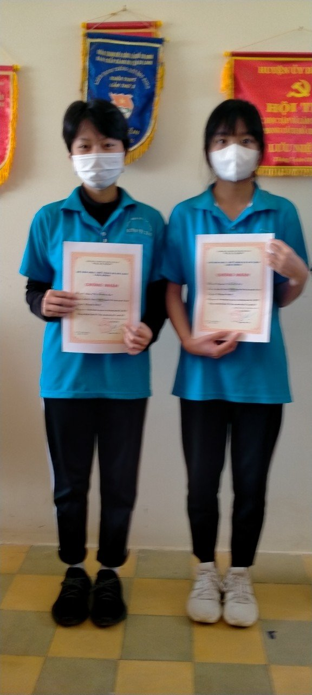

* TỔNG KẾT CUỘC THI VĂN HÓA ĐỌC NĂM 2021*

Cuộc thi Đại sứ văn hóa đọc 2021 được Bộ Văn hóa Thể thao và Du lịch phát động trên khắp cả nước dành cho học sinh, sinh viên nhằm khơi dậy niềm đam mê đọc sách, hình thành thói quen và kỹ năng đọc sách trong thế hệ trẻ. Qua đó, các em chia sẻ những cuốn sách hay, sáng tác các tác phẩm khích lệ việc đọc sách, kinh nghiệm đọc sách hiệu quả và xây dựng các kế hoạch biện pháp để khuyến khích mọi người đọc sách.
Vòng sơ khảo cuộc thi ở Lâm Đồng đã thu hút 18.246 học sinh đến từ 114 trường học các cấp học trong toàn tỉnh tham gia. Có 1.037 bài thi được gửi tham dự vòng sơ khảo cấp tỉnh, Ban giám khảo đã xem xét, đánh giá phân loại; 3 tập thể và 41 cá nhân đã được trao giải thưởng; trong đó 14 giải xuất sắc và 27 giải khuyến khích theo 7 hạng mục với từng cấp học.
Cụ thể trường chúng ta có bạn: Nguyễn Vũ Thảo Ly; Lê Thanh Thúy
Đặng Thị Hương Lan; Nguyễn Thị Mỹ Trà đạt giải khuyến khích và trường chúng ta đoạt giải tập thể. Xin chúc mừng các bạn và mong các bạn tiếp tục phát huy tinh thần nhiệt huyết của mình trong các cuộc thi sắp tới./.